Student, Major, dan Subject
Praktikum ini membahas konsep Relationship dalam framework Laravel, khususnya one-to-many dan many-to-many, studi kasus yang digunakan adalah sistem akademik sederhana yang terdiri dari student, major, dan subject.
Melalui praktikum ini, mahasiswa diharapkan dapat memahami konsep relasi antar tabel, penggunaan foreign key, pivot table, serta penerapan eloquent relationship dalam pengelolaan data berbasis web.
Mampu memahami konsep relationship dalam Laravel dan membedakan jenis-jenisnya, terutama One-to-Many dan Many-to-Many.
Mampu membuat migration dengan foreign key dan pivot table untuk mendukung relasi antar tabel.
Mampu mengimplementasikan method relatinship pada model seperti hasMany(), belongsTo(),
dan belongsToMany().
Mampu menampilkan data dari beberapa tabel yang berelasi menggunakan Blade Template dengan bantuan Eloquent Relationship di Laravel.
Sistem akademik ini memiliki empat tabel: majors, students, subjects, dan tabel pivot student_subject. Berikut adalah relasi antar entitas.
Major → Student : One-to-Many (satu jurusan
memiliki banyak mahasiswa).
Student → Major : Many-to-One (banyak mahasiswa
memilih satu jurusan).
Student ↔ Subject : Many-to-Many (satu mahasiswa
mengambil banyak mata kuliah, dan satu mata kuliah diambil banyak mahasiswa, dan dihubungkan
melalui tabel pivot).
Lakukan konfigurasi database pada file .env sebagai berikut.
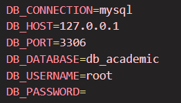
Jalankan perintah php artisan make:migration create_majors_table lalu isi kolom
tabel dengan id dan name seperti berikut.
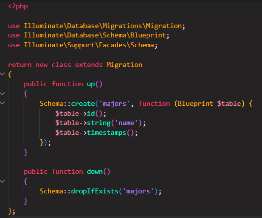
Jalankan perintah php artisan make:migration create_students_table lalu isi kolom
tabel dengan id, nim, name,
address, dan foreignId seperti berikut.
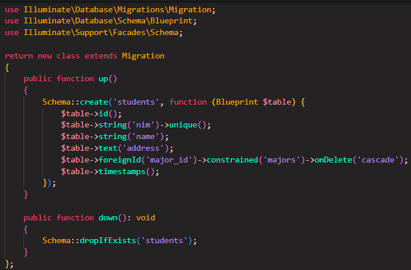
Jalankan perintah php artisan make:migration create_subjects_table lalu isi kolom
tabel dengan id, name, dan sks seperti berikut.
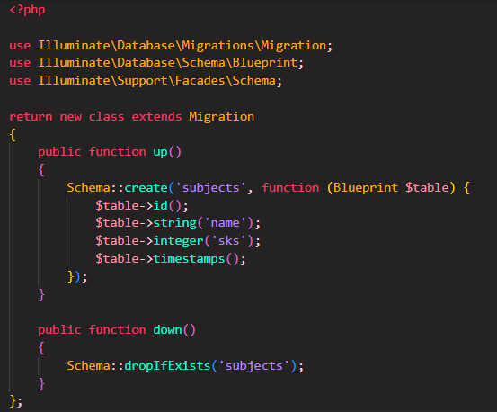
Jalankan perintah php artisan make:migration create_student_subject_code lalu isi kolom
tabel dengan foreign key dari tabel subjects dan students seperti berikut.
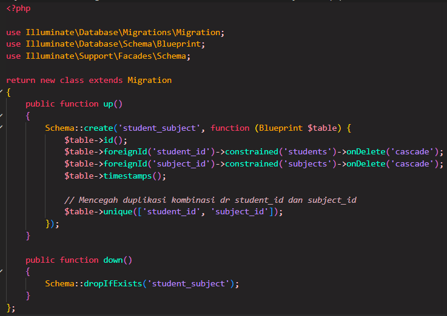
php artisan migrate untuk mengeksekusi file migration yang
telah dibuat sebelumnya.
Jalankan perintah php artisan make:model Major . Tambahkan method students()
yang menggunakan hasMany(Student::class) untuk menyatakan bahwa satu jurusan memiliki
banyak mahasiswa.
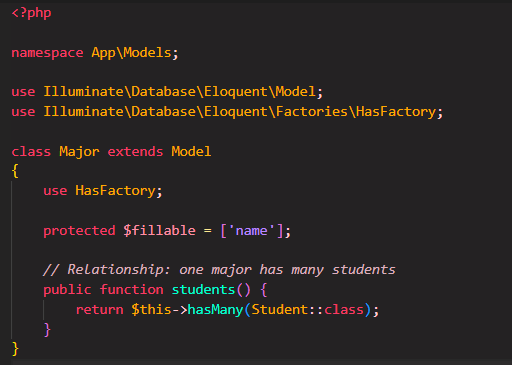
Jalankan perintah php artisan make:model Student . Model ini memiliki dua relationship:
belongsTo(Major::class) untuk relasi ke jurusan, dan belongsToMany(Subject::class)
untuk relasi Many-to-Many dengan mata kuliah.
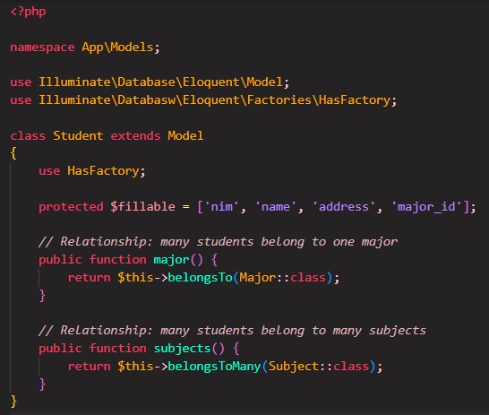
Jalankan perintah php artisan make:model Subject . Tambahkan method students()
dengan belongsToMany() sebagai relasi Many-to-Many dengan mahasiswa.
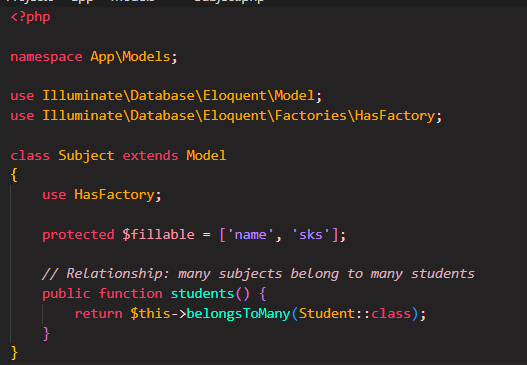
Jalankan perintah php artisan make:seeder MajorSeeder . Tambahkan 4 data jurusan:
Teknik Informatika, Sistem Informasi, Teknik Komputer, dan Manajemen Informatika.
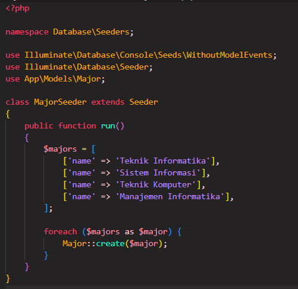
Jalankan perintah php artisan make:seeder SubjectSeeder. Tambahkan 5 mata kuliah
lengkap dengan sks-nya.
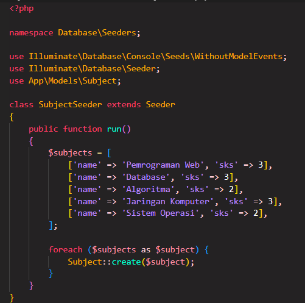
Jalankan perintah php artisan make:seeder StudentSeeder. Tambahkan 5 data dummy
identitas mahasiswa.
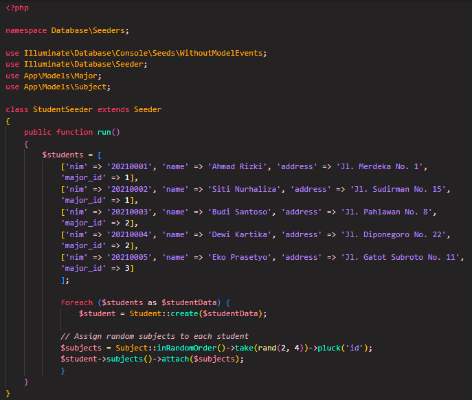
Buka file DatabaseSeeder.php. Update file untuk memanggil beberapa seeder sekaligus sehingga data awal pada tabel major, student, dan subject dapat dimasukkan ke dalam database.
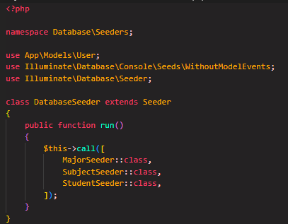
php artisan db:seed untuk menjalankan seeder dan mengisi data awal ke
dalam database secara otomatis.
Jalankan perintah php artisan make:controller StudentController untuk membuat
StudentController. Tambahkan fungsi di dalamnya seperti berikut.
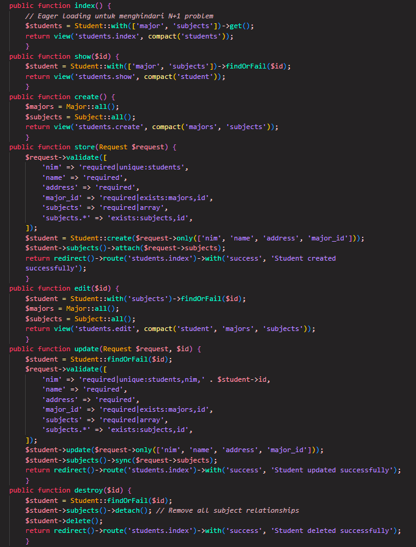
Buat routing dalam file web.php seperti berikut.
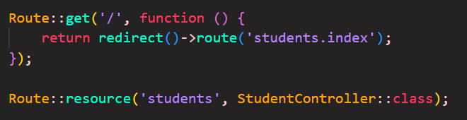
Buat folder resources/views/students dan file resources/views/layouts/app.blade.php.
Berisi struktur dasar HTML yang digunakan sebagai layout utama dan kerangka dasar halaman web untuk bagian navbar, struktur HTML, dan elemen umum agar tidak perlu ditulis berulang kali.
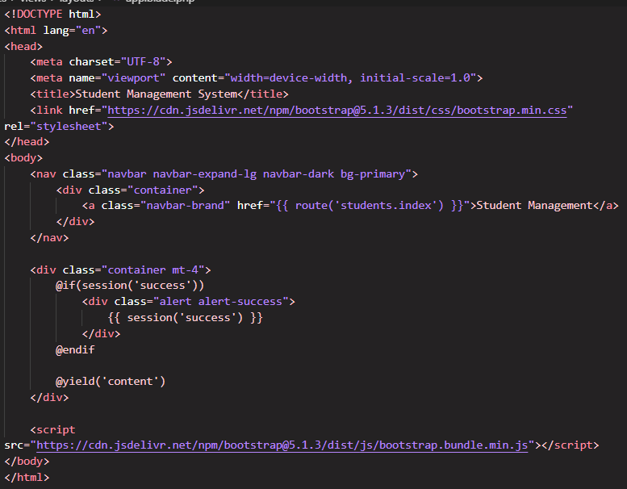
Halaman yang menampilkan daftar seluruh mahasiswa dalam bentuk tabel lengkap dengan mata kuliah yang diambil. Tombol aksi ditambahkan untuk melakukan perubahan pada data mahasiswa.
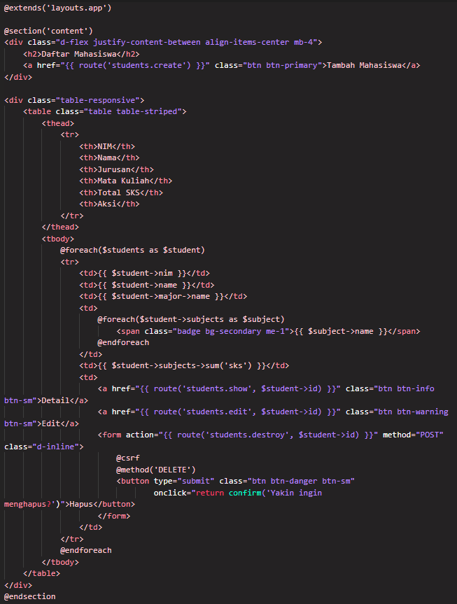
Halaman yang digunakan sebagai tempat menambah data mahasiswa baru beserta identitas mata kuliah dan jurusannya.
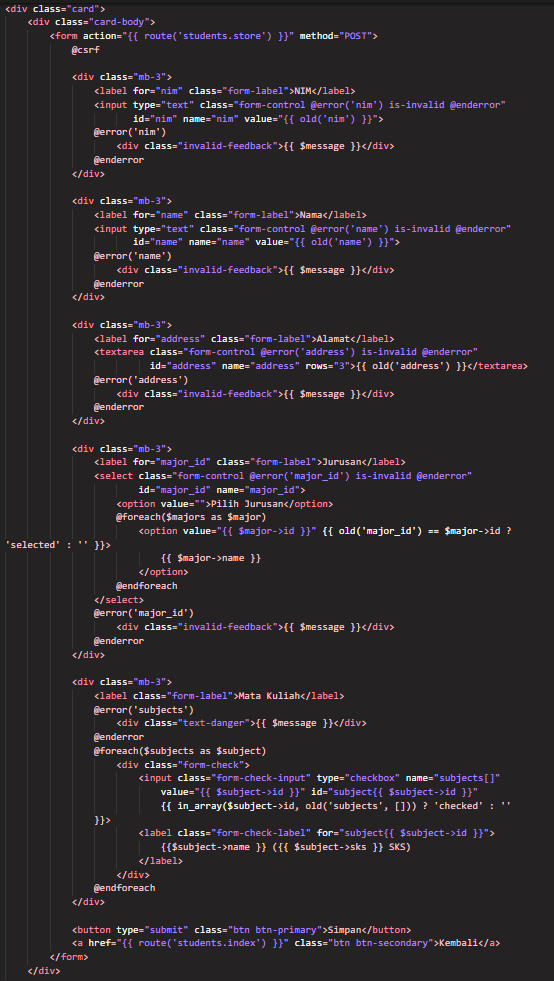
Jalankan php artisan serve untuk melihat tampilan akhir dari project. Buka
URL http://127.0.0.1:8000/students, tampilan akan terlihat seperti berikut.
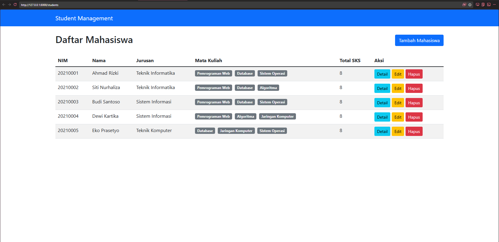
Klik tombol Detail untuk menampilkan data lengkap mahasiswa seperti berikut.
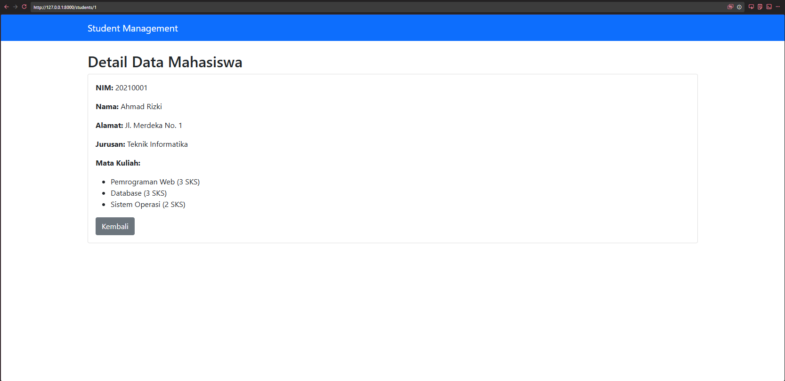
Tombol Edit akan menampilkan form untuk memperbarui data mahasiswa yang sudah ada.
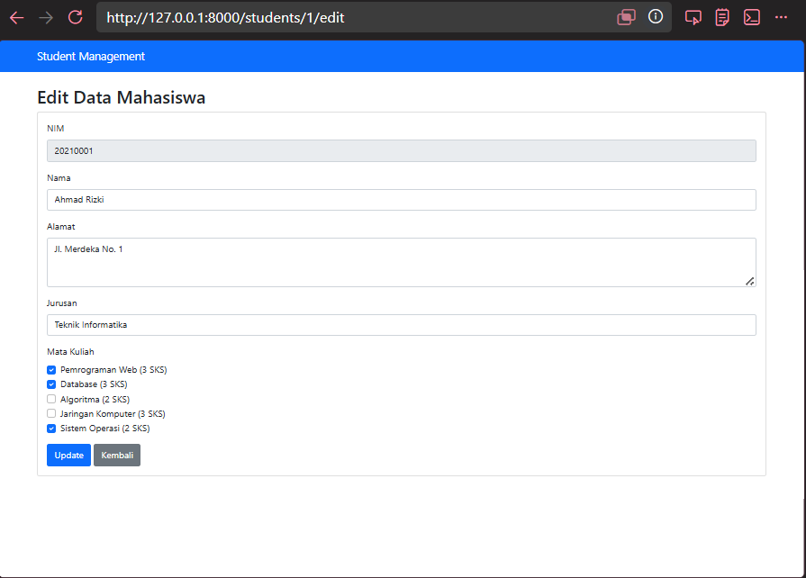
Data dapat dihapus dengan mengklik tombol Delete. Akan muncul pesan bahwa data berhasil dihapus seperti berikut.
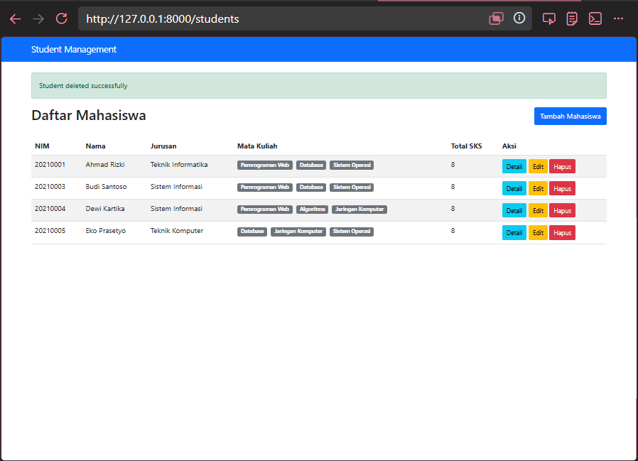
Implementasi Query Database untuk Menampilkan Laporan Statistik Akademik
Buat controller baru menggunakan perintah php artisan make:controller ReportController.
File baru akan berada pada folder App\Http\Controllers\ReportController.php.
Buka file web.php kemudian tambahkan baris perintah berikut untuk mengatur routing.
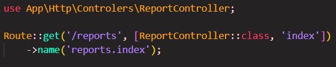
Buka file ReportController.php lalu isi dengan query berikut.
Semua mahasiswa beserta jurusan dan mata kuliahnya
$students = Student::with('major', 'subjects')->get();
Jurusan yang memiliki mahasiswa terbanyak
$majors = Major::withCount('students')->get();
$maxStudents = $majors->max('students_count');
$topMajors = $majors->where('students_count', $maxStudents);
Mata kuliah yang diambil oleh mahasiswa tertentu
$subjects = Subject::with('students')->get();
Total SKS yang diambil setiap mahasiswa
$totalSKS = Student::with('subjects')->get();
Isi file controller akan menjadi seperti berikut setelah diisi query.
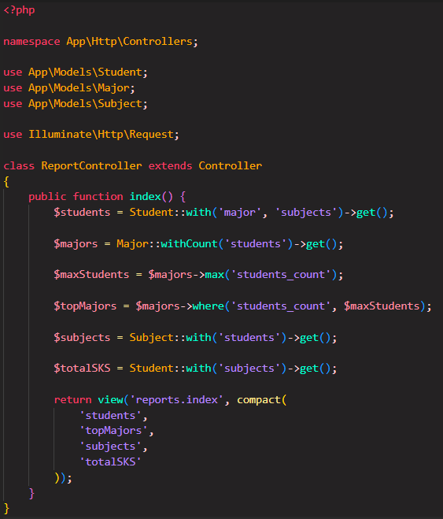
Pada resources/views, tambahkan folder baru yaitu reports
lalu buat file baru di dalamnya dengan nama index.blade.php.
Tampilkan tabel data mahasiswa beserta jurusan dan mata kuliahnya seperti berikut.
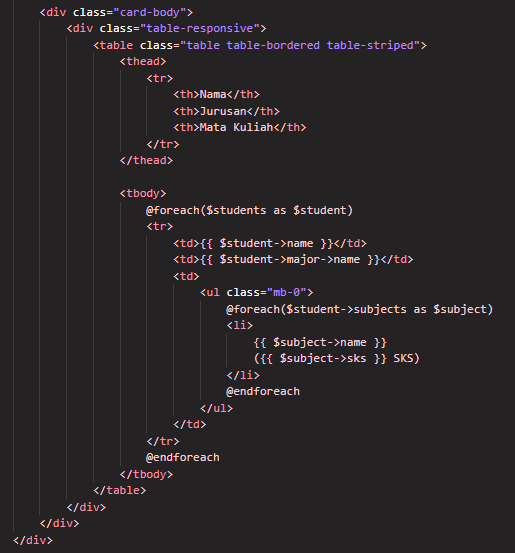
Tampilkan statistik jurusan dengan mahasiswa terbanyak seperti berikut.
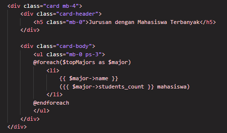
Tampilkan data mata kuliah dan mahasiswa yang mengambil dalam tabel seperti berikut.
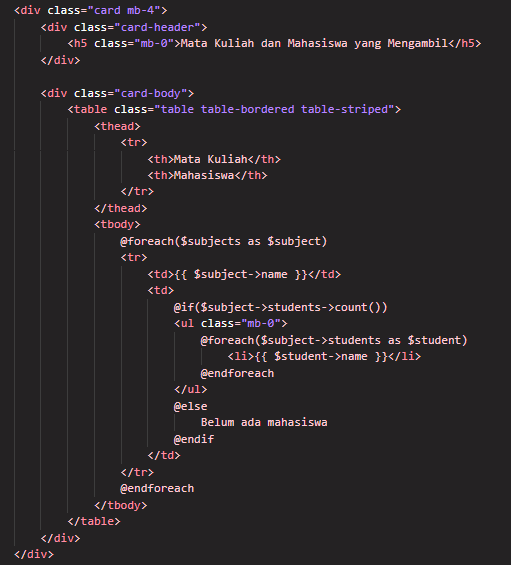
Tampilkan data total SKS yang diambil oleh tiap mahasiswa dalam tabel berikut.
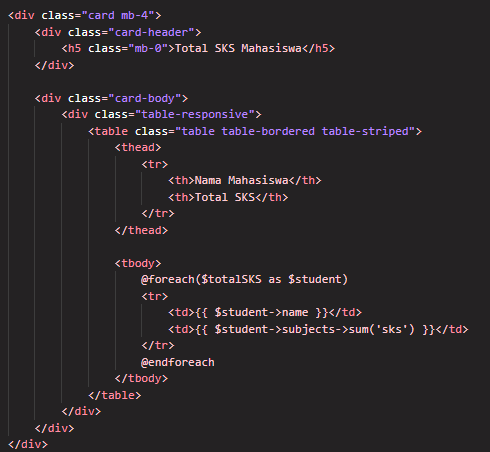
Jalankan perintah php artisan serve lalu buka URL
http://127.0.0.1:8000/reports. Tiap data statistik
ditampilkan dalam card untuk masing-masing datanya.
Data semua mahasiswa beserta jurusan dan mata kuliahnya
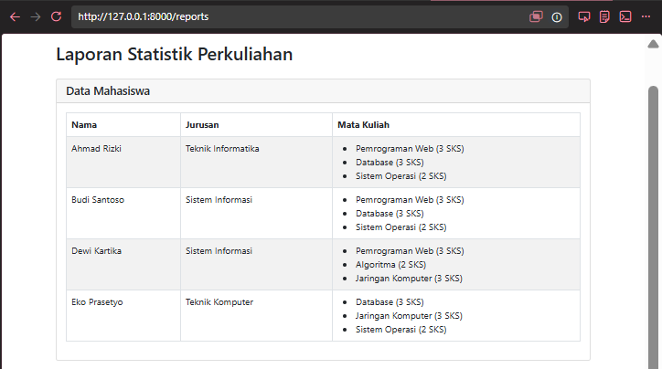
Jurusan dengan mahasiswa terbanyak
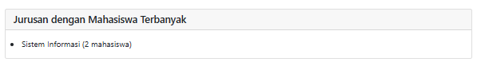
Mata kuliah dan mahasiswa yang mengambil
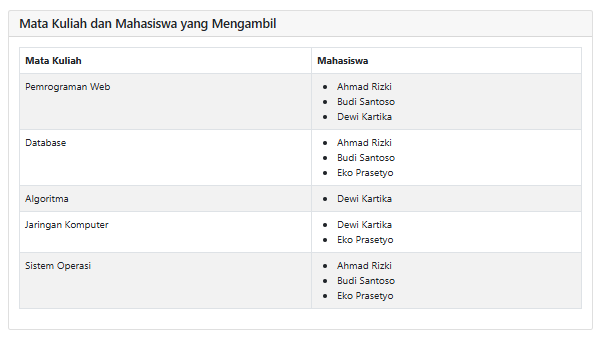
Total SKS yang diambil oleh tiap mahasiswa
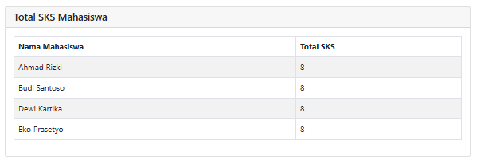
Dari praktikum yang telah dilakukan, telah dipelajari dan dipraktikkan konsep Relationship dalam Laravel sebagai konsep fundamental dalam pengembangan aplikasi web dengan database.
| Method | Jenis Relasi | Fungsi |
|---|---|---|
hasMany |
One-to-Many | Satu data memiliki banyak data lain (Major → Student) |
belongsTo |
Many-to-One | Banyak data milik 1 data (Student → Major) |
belongsToMany |
Many-to-Many | Relasi dua arah dengan tabel pivot (Student ↔ Subject) |
with() |
Eager Loading | Mengambil data beserta relasinya dalam satu query untuk mengurangi jumlah query ke database. |
sum('column') |
Aggregate | Menjumlahkan nilai dari suatu kolom tertentu |
Kode project dapat diakses melalui repository Github berikut.
Buka Github